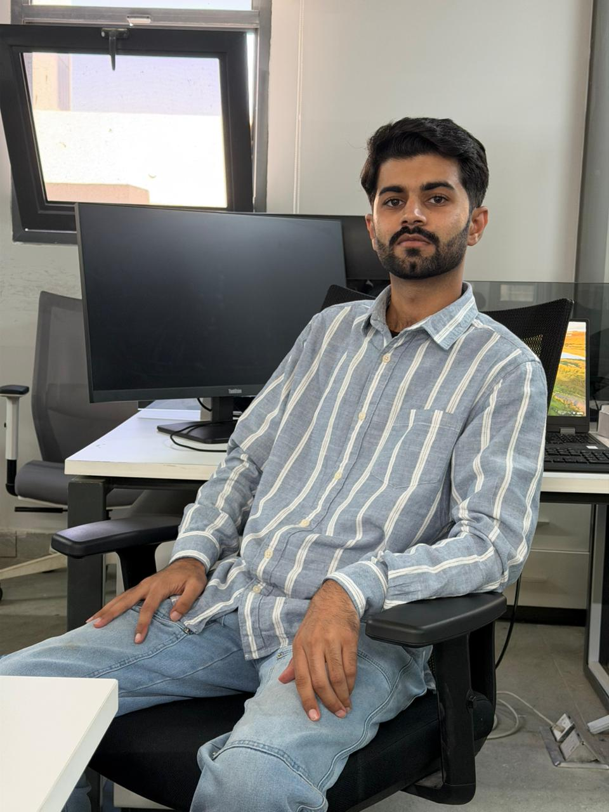
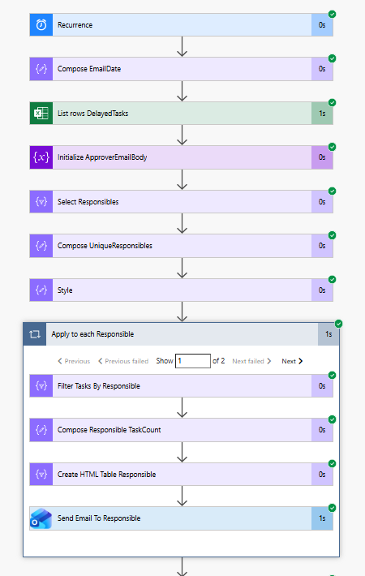
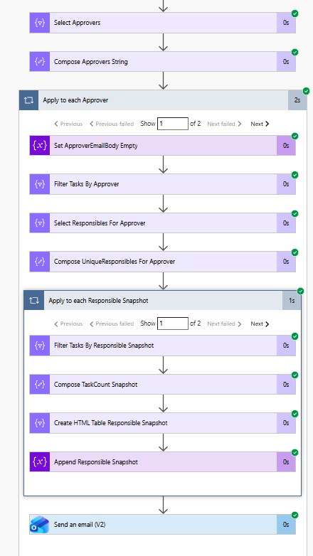
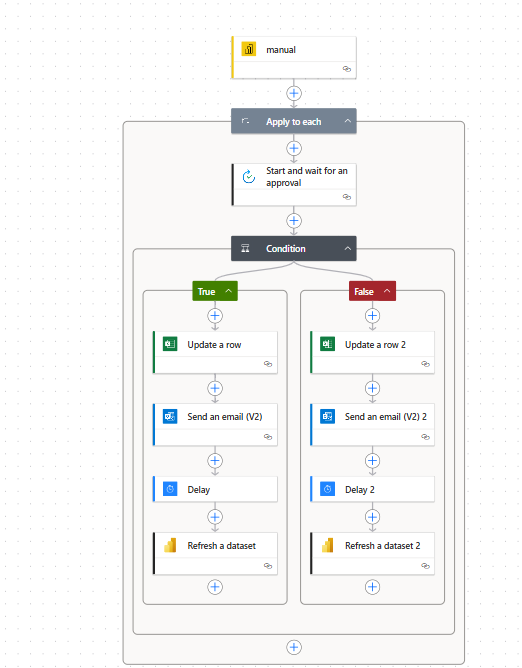
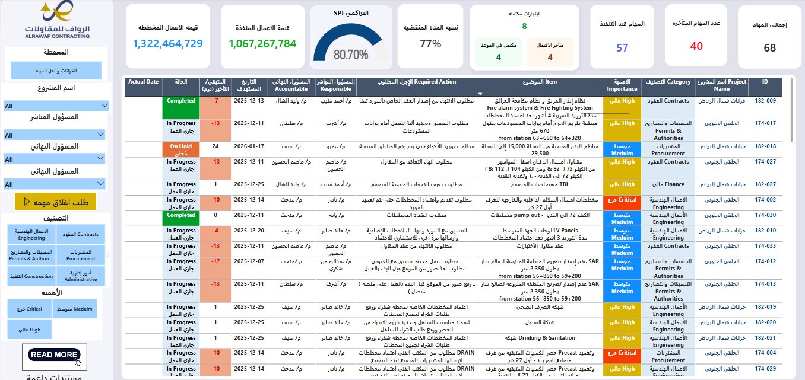
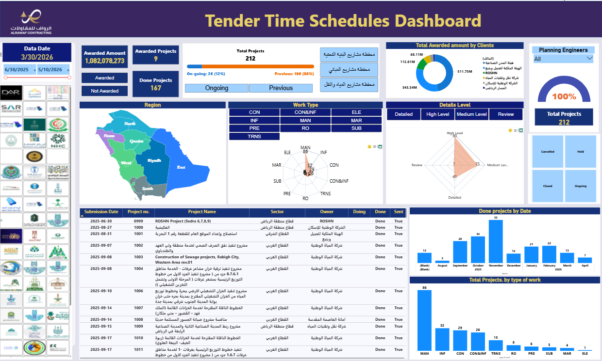
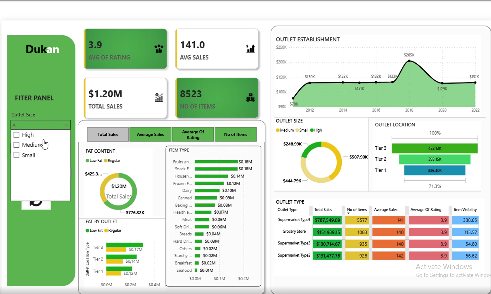

📊 Data Analyst | Business Intelligence Specialist
⭐ 5+ Years in Power BI, SQL, Power Automate, ETL & Dashboard Engineering
“Transforming complex data into strategic business intelligence”
Results-driven Data Analyst with a proven track record of building interactive dashboards, automating mission-critical workflows, and enabling data-driven cultures. I bridge the gap between raw data and executive decision-making — delivering clarity, speed, and measurable impact.
✅ Individualized Reminder Engine: Built a dynamic workflow that scans SharePoint task lists, filters tasks per user, and sends personalized email reminders with embedded HTML tables listing each user's pending responsibilities. This reduced overdue tasks by 40% within 2 months.
✅ Manager Consolidation Logic: Extended the flow to compile all individual task summaries into a single executive digest email for managers — enabling full visibility without inbox overload. Real-time accountability and operational oversight improved by 60%.
✅ Approval Workflow Cycle: Developed a bi-directional approval mechanism where users submit task updates, managers review & approve changes, and updates are automatically reflected back into SharePoint data sources — ensuring seamless governance and audit trail.

View Flow Logic
Manager Digest ViewDesigned a mission-critical integration between Power BI reports and Power Automate to enable one-click task completion approvals directly from dashboards. When a user clicks "Request Approval" inside a Power BI report, an automated approval request is sent to the manager with full context.
✔️ Upon manager approval, the system instantly updates the backend SharePoint data source and refreshes the Power BI dashboard — eliminating data latency. Users receive an email confirmation, and all stakeholders stay aligned. This end-to-end solution increased task cycle efficiency by 55% and reduced manual follow-ups.

Launch PreviewBusiness Impact: Engineered a multi-layered Power BI solution featuring 4 interactive pages that tracks KPIs across WBS-level performance, departmental targets, and predictive forecasting. Integrated complex data from SharePoint lists, Excel workbooks, and SQL views to provide real-time insights for C-level reviews and strategic planning.
📈 Key Features: Drill-through filters for deep-dive analysis, dynamic KPI cards with trend indicators, interactive trend lines, and AI-driven forecast visuals for upcoming quarters. Management leverages this dashboard to reallocate resources proactively, prevent budget overruns, and identify top-performing business units with instant visibility.
✅ Results: Reduced monthly reporting effort by 85%, enabled data-driven target setting across 12 departments, and improved forecast accuracy by 32% through predictive modeling integration.
Built a dedicated Issue & Risk Tracking Dashboard integrated with Power Automate, implementing two core workflows:
✅ Automated reminder email workflows that notify each responsible user individually based on assigned tasks, ensuring accountability and reducing overdue action items by 45%.
✅ Approval workflow cycle where task updates are reviewed and approved per user, with approved data automatically reflected back into the SharePoint data source — maintaining data integrity and audit compliance.
🔐 Implemented Row-Level Security (RLS) for 1000+ users, ensuring users can only view sector-specific data and assigned tasks, while maintaining controlled access through the Power Automate system.

View DashboardThis comprehensive dashboard provides a 360° overview of tenders and projects, enabling stakeholders to monitor performance across the entire project lifecycle — from tender issuance to final delivery. Designed for executive-level decision-making, it consolidates critical data streams into a single source of truth.
📊 Key Capabilities: Tracks tender milestones, bid submission timelines, approval statuses, and project completion rates against baseline schedules. The dashboard visualizes performance trends over time, highlighting delays, bottlenecks, and on-track projects through interactive Gantt-style views, heat maps, and KPI scorecards.
⏱️ Time-Based Analytics: Leverages time intelligence to compare actual vs. planned timelines, identify recurring delays, and forecast future project completion dates using historical patterns.
📈 Business Impact: Reduced tender processing time by 28%, improved on-time project delivery by 35%, and provided leadership with real-time visibility into the entire tender portfolio.

View DashboardExcited to share my recently developed Power BI Dashboard (Grocery Store Analytics). This dashboard was designed to provide clear business insights and improve decision-making for retail operations. Some of the key highlights include:
🔹 Interactive Bookmarks – for easy refresh and navigation
🔹 KPIs Tracking – Total Sales, Average Sales, Average Ratings, and Number of Items
🔹 Smart Filters – Item Type, Outlet Location Type, and Outlet Size for flexible analysis
🔹 Visual Insights – Fat Content distribution with Pie Charts, Fat Content by Outlet comparisons with bar/column charts, and many more insightful visualizations
💡 The goal was to transform raw grocery store data into meaningful insights, making it easier to monitor performance and identify growth opportunities. Always excited to keep learning, experimenting, and improving in the field of Data Analytics & Visualization! 📊✨

View Dashboard💼 Open for collaborations, consulting, and data-driven opportunities.
🔗 LinkedIn: www.linkedin.com/in/ahmadkhan1999
📊 Portfolio | Power BI Showcases | Automation Solutions
© 2025 Muhammad Ahmad Khan — Turning Data into Decisions